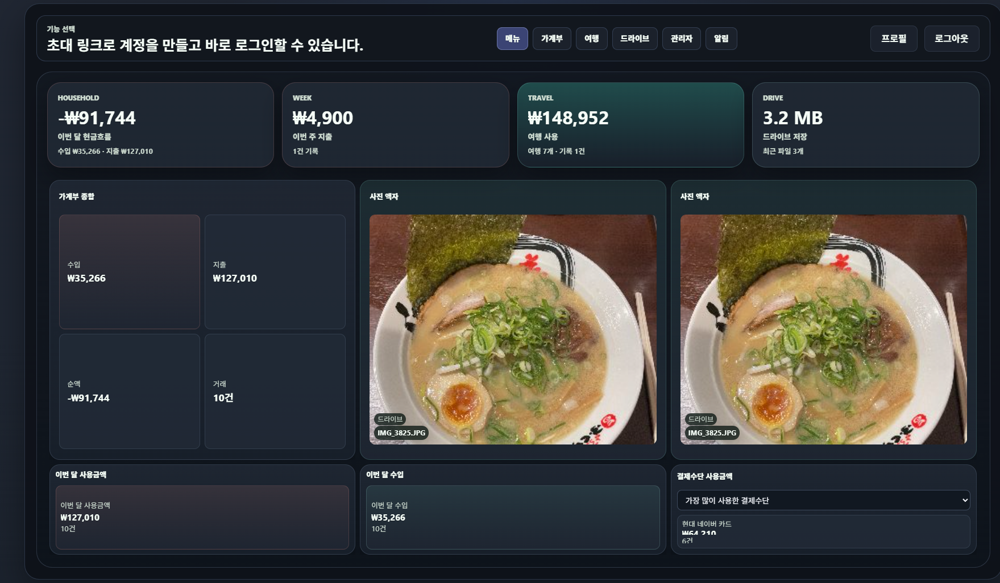
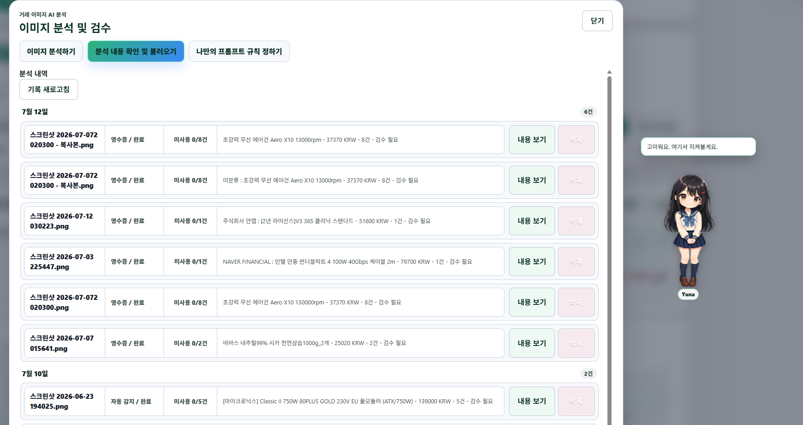
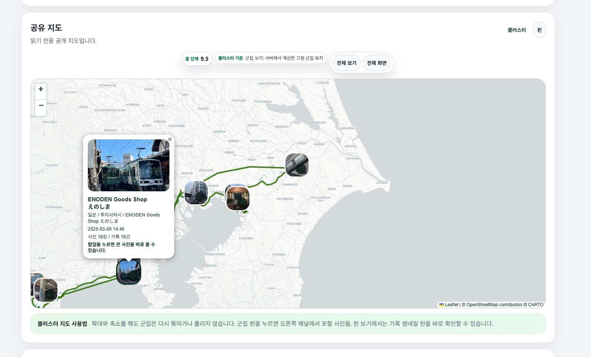

설계 목표
- 달력 기반으로 거래를 빠르게 입력·수정하고 월별 흐름을 즉시 확인한다.
- 영수증·결제 캡처·거래내역을 AI가 구조화하되, 사람이 확인한 항목만 저장한다.
- 여행의 장소, GPX 이동 경로, 사진, 환율·지출을 같은 시간축에서 관리한다.
- 사진과 파일은 드라이브로 보관하면서 여행 기록은 참조로 연결해 중복을 줄인다.
기존 개인 기록은 가계부 앱, 사진 앱, 지도, 파일 저장소로 흩어지기 쉽습니다. Calen은 “언제, 어디서, 무엇에 썼는가”를 연결하되, 자동화가 사용자의 기록을 덮어쓰지 않도록 통제 지점을 남기는 데서 출발했습니다.
각 기능은 입력, 제안, 검수, 확정의 단계를 갖습니다. 특히 AI를 쓰는 흐름에서 “분석 결과”와 “실제 저장”을 분리한 것이 핵심입니다.
날짜 선택, 빠른 거래 입력, 거래 시트 편집, 결제수단·분류 관리, 조합식 검색을 하나의 월간 흐름으로 제공합니다.
이미지 업로드와 요청 생성 후, OCR·구조화 결과를 검수 거래로 표시합니다. 날짜·시간·금액·분류를 직접 수정한 뒤 승인합니다.
서버가 Apache POI로 파일의 셀 값을 읽고, 행 단위 원본 데이터에 식별자를 부여한 뒤 AI가 가계부 JSON 초안을 만듭니다.
여행별 장소 핀, GPX, EXIF 사진, 여행 가계부를 연결합니다. 공개 시에는 제외할 장소·사진·경로를 선택할 수 있습니다.
Docker Compose의 기본 실행 구성은 프론트엔드, Spring Boot 백엔드, MariaDB 11.4, MinIO로 구성됩니다. Redis는 코드에서 캐시·재연결 처리를 위해 사용하며, 배포 환경에 따라 별도 서비스로 붙일 수 있습니다.
실제 Docker Compose 구성: frontend → backend → mariadb:11.4 / minio/minio. AI와 OCR은 설정된 원격 또는 로컬 서비스로 연결됩니다.
아래는 의존성 및 배포 설정에 실제 포함된 기술을 중심으로 정리한 것입니다. 로고는 시각적 식별을 위한 기술 로고이며, 서비스 구현은 각 공식 문서의 라이선스와 사용 조건을 따릅니다.

화면 상태와 컴포넌트 경계를 빠르게 구성하고, Vite의 개발·빌드 경험으로 화면 수가 많은 개인 워크스페이스를 관리합니다.

인증, 검증, 트랜잭션, API, 헬스체크를 표준적인 서버 계층으로 묶습니다. Java 17 기반으로 도메인 로직과 상태 전이를 명시합니다.

거래·분류·여행·공유·분석 요청 같은 관계형 데이터를 JPA와 Flyway 마이그레이션으로 일관되게 관리합니다.

사진, GPX, OCR 원본 및 썸네일을 DB 본문과 분리합니다. 대용량 바이너리는 객체 스토리지에 두고 메타데이터로 연결합니다.

반복 조회되는 외부 지오코딩 결과 등을 캐시하고, 클라이언트 재연결·백오프를 통해 외부 의존성의 일시적 실패를 완화합니다.

사진 GPS와 장소·GPX를 지도 위에서 읽을 수 있게 합니다. 클러스터·공개 지도·사진 상세 흐름을 여행 정보와 연결합니다.

엑셀 파일을 AI 서버로 보내지 않고 프로젝트 서버에서 셀 데이터로 읽습니다. 원본 행을 보존한 채 AI 정리 후보를 만들기 위한 기반입니다.

프론트엔드·백엔드·MariaDB·MinIO를 서비스 단위로 실행하고 healthcheck와 내부 네트워크로 로컬·서버 구성을 반복 가능하게 만듭니다.
기능이 늘어나는 과정에서 사용성, 신뢰성, 데이터 안전성이 서로 충돌했습니다. 아래 내용은 실제 구현에서 다룬 문제를 과장 없이 정리한 것입니다.
결제 캡처와 주문 목록은 같은 이미지에 여러 거래가 섞이고, OCR은 날짜·금액·행 순서를 잘못 읽을 수 있습니다. 특히 한 행의 날짜가 다음 행에 덮이는 문제, 최종 결제금액과 세부 금액이 혼동되는 문제가 발생할 수 있습니다.
대응: 분석 요청·원본 이미지·제안 거래를 분리하고, AI 응답은 구조화된 후보로만 반환합니다. 사용자는 날짜·시간·금액·분류·메모를 수정하고 “승인 후 기입”해야 최종 거래가 생성됩니다.
로컬 LM Studio, OpenAI 호환 API, Ollama는 엔드포인트·인증·모델·처리 시간이 다릅니다. 한 서버에 긴 OCR 요청과 분석 요청이 동시에 들어오면 응답이 섞이거나 취소된 화면과 서버 추론 상태가 어긋날 수 있습니다.
대응: 가계부 분석, 이미지/OCR, 엑셀 가져오기를 기능별 설정으로 분리하고 요청 큐를 둡니다. 주소 allowlist, 연결·응답 제한 시간, 서버 상태 점검, 암호화 저장 API 키를 관리자 설정에서 관리합니다.
브라우저 blob URL에만 이미지를 두면 페이지를 떠난 뒤 재검수할 수 없습니다. 여행 사진·GPX·OCR 이미지도 중복 저장하면 비용과 정합성 문제가 커집니다.
대응: MinIO에 원본과 썸네일을 저장하고, 도메인 데이터는 객체 키와 메타데이터를 참조합니다. 여행과 드라이브는 파일 자체를 복제하기보다 연결하는 구조를 사용합니다.
모바일 브라우저에서 지도 전체화면, 클러스터 클릭, 사진 상세 오버레이가 겹치면 터치가 전달되지 않거나 화면이 깜빡이는 문제가 생길 수 있습니다.
대응: 지도·모달의 레이어 순서와 포인터 이벤트를 분리하고, 사진 상세는 현재 지도에 표시된 사진 목록을 기준으로 이전·다음 이동하도록 개선했습니다. 모달은 배경 클릭·드래그로 닫히지 않고 닫기 버튼 또는 Esc로 종료합니다.
복잡한 대시보드, 지도, 관리자 모달은 배경·경계·텍스트 토큰이 개별적으로 남아 있으면 테마 전환 시 대비가 무너집니다.
대응: 모달·팔레트·표·사진 상세에 공통 토큰을 적용하고, 화면별 예외 색상을 줄였습니다. 단, 브라우저·지도 타일의 외부 스타일 영향은 계속 회귀 테스트가 필요한 영역입니다.
캡처·영수증·엑셀을 거래 후보로 변환해 수작업 입력을 줄입니다. 단, 자동 저장을 하지 않아 오류가 나도 원본 장부를 바로 훼손하지 않습니다.
사진만 남기거나 지출만 남기는 대신, 장소·경로·사진·여행 가계부를 연결해 나중에 “어디서 쓴 비용인지” 되짚을 수 있습니다.
사용 환경에 따라 로컬 모델, OpenAI 호환 서버, Ollama를 기능별로 선택할 수 있습니다. 단일 벤더나 단일 모델에만 묶이지 않도록 한 구조입니다.
아래 이미지는 프로젝트에 포함된 화면 캡처입니다. 이 HTML 파일과 같은 docs/portfolio 폴더에 두면 로컬에서도 표시됩니다.



답변은 현재 프로젝트의 구조와 구현 범위를 기준으로 작성했습니다. 구현하지 않은 부분은 계획 또는 한계로 명시합니다.
개인 데이터는 기능별로 분리되어 있어도 실제 사용 맥락에서는 연결됩니다. 여행 중 발생한 지출은 여행 일정, 방문 장소, 결제 증빙, 사진과 함께 봐야 의미가 생깁니다. 가계부만 보면 “언제 얼마를 썼는지”는 알 수 있지만, 여행 기록과 연결하면 “어떤 이동·방문·사진과 관련된 비용인지”까지 이해할 수 있습니다.
다만 모든 데이터를 한 테이블에 넣는 방식은 선택하지 않았습니다. 거래, 여행, 미디어, GPX, 드라이브는 각 도메인으로 관리하고 관계와 객체 참조로 연결합니다. 그래서 가계부 조회와 여행 지도 기능이 서로의 모델을 과도하게 침범하지 않으면서도 필요한 맥락은 연결할 수 있습니다.
결론: 기능을 억지로 합친 것이 아니라, 사용자에게 분산되어 있던 “기록의 맥락”을 연결하기 위해 도메인은 분리하고 경험은 연결했습니다.
이미지 OCR과 언어 모델은 빠르게 후보를 만들 수 있지만, 날짜가 다른 행으로 전파되거나 상품 금액과 총 결제금액을 혼동하는 오류가 실제로 발생할 수 있습니다. 특히 한 장의 주문 내역에 여러 거래가 있거나 작은 글씨에 시간이 표시된 경우, “대략 맞는” 결과는 충분하지 않습니다. 가계부는 나중에 통계·예산·세무성 확인의 기반이 되므로 잘못 저장된 값의 비용이 큽니다.
따라서 Calen은 요청 이력과 AI 추출 결과를 별도 상태로 보관하고, 화면에서 거래 후보를 수정한 뒤 승인 후 기입해야 실제 거래 생성이 일어나도록 구성했습니다. 엑셀도 파일 원본을 AI에 직접 보내지 않고 서버가 셀을 읽어 원본 행 식별자와 함께 후보를 만들며, 사용자는 미리보기를 검수합니다.
결론: AI를 자동 입력기가 아니라 검수 가능한 보조 도구로 제한해, 편의성과 데이터 신뢰성을 함께 확보했습니다.
이미지 분석은 업로드된 원본을 객체 스토리지에 저장하고, 선택된 이미지 분석 서버로 전달해 구조화된 결과 후보를 받는 흐름입니다. 구현에는 OCR 전문 문구·행 단위 거래 분리·날짜와 시간 보정·기존 활성 분류 및 결제수단 참조가 포함됩니다. 결과에는 금액, 일시, 제목, 분류, 메모, 결제수단 후보 같은 거래 필드가 포함될 수 있지만 최종 확정은 사용자 검수 단계가 담당합니다.
실무적으로 OCR 텍스트와 LLM 해석은 모두 틀릴 수 있습니다. 그래서 원본 이미지와 추출 텍스트, 검수 후보를 함께 보관하고, 사용자에게 어느 단계에서 오류가 발생했는지 확인할 수 있는 근거를 남깁니다. 요청이 여러 개일 때는 큐를 통해 한 서버에 무분별하게 동시에 요청하지 않도록 했습니다.
결론: 단순한 “이미지 → 저장” 자동화가 아니라, 근거를 남기는 “이미지 → 후보 → 검수 → 저장” 파이프라인입니다.
이미지/OCR, 가계부 분석, 엑셀 구조화는 필요한 모델 역량과 처리 시간이 다릅니다. 로컬 환경에서는 LM Studio나 Ollama를 쓰고, 외부 API 또는 OpenAI 호환 게이트웨이를 쓰는 환경도 있을 수 있습니다. 한 서버 장애가 모든 AI 기능을 멈추게 하거나, 무거운 이미지 분석이 가계부 분석까지 지연시키는 구조는 피해야 합니다.
Calen은 가계부 분석, 이미지 분석/OCR, AI 엑셀 가져오기를 기능별 설정으로 둡니다. 관리자는 후보 서버를 바로가기처럼 관리하고, 후보 등록만으로는 실제 동작 서버가 바뀌지 않으며, 기능과 서버를 연결하고 저장해야 반영됩니다. API 키는 관리 설정에서 암호화 저장하며, 허용 호스트·상대 경로·연결/응답 제한 시간을 검증합니다.
결론: 다중 제공자 지원의 목적은 “AI를 많이 붙이는 것”이 아니라, 기능별 요구와 운영 환경에 맞춰 장애 범위와 선택권을 분리하는 것입니다.
아니요. 구현 의도는 프로젝트 서버가 Apache POI로 .xlsx 또는 .xls의 셀을 직접 읽고, 각 행에 sourceRow 같은 식별 정보를 붙인 원본 데이터만 AI에 전달하는 것입니다. AI는 해당 셀 값이 날짜, 금액, 거래 제목, 분류 후보 중 무엇인지 판단해 가계부 후보 JSON을 만들고, 서버는 날짜·금액·분류·결제수단을 검증한 뒤 미리보기로 반환합니다.
이 방식은 파일 바이너리나 Base64를 외부 모델에 넘기지 않아 전송 범위를 줄이고, AI가 원본에 없던 거래를 임의로 만들었는지 sourceRow 기반으로 추적할 수 있게 합니다. 사용자는 미리보기에서 수정하고 선택한 항목만 최종 커밋합니다.
결론: 엑셀 AI 가져오기는 “파일 해석을 외주화”하는 기능이 아니라, 서버가 읽은 행 데이터를 안전하게 재조립하는 검수 워크플로입니다.
여행 공유는 회원 간 편집 권한을 주는 기존 공유와 달리, 공개 토큰 URL을 통해 선택한 지도 데이터를 읽기 전용으로 보여주는 시나리오를 지원합니다. 공개 시 장소, 사진, 경로를 선택적으로 제외할 수 있고, 공개 조회용 API는 토큰 범위의 지도 데이터·클러스터·미디어 콘텐츠만 제공하도록 분리되어 있습니다.
공유 URL은 접근 자체를 허용하는 토큰이므로 링크를 받은 사람이 볼 수 있다는 점을 전제로 합니다. 따라서 민감한 위치나 사진은 공유 전에 제외해야 하고, 운영 환경에서는 HTTPS, 충분히 긴 예측 불가능한 토큰, 회수·만료 정책, 로그 모니터링을 함께 강화해야 합니다.
결론: 공개 지도는 편집 공유가 아닌 범위 제한 읽기 전용 공유이며, 링크 관리와 공유 범위 선택이 핵심 보안 통제입니다.
사진·GPX·OCR 원본은 용량이 크고 스트리밍, 썸네일, 삭제 수명주기 등 파일 중심 처리가 필요합니다. 반면 거래·분류·분석 상태·사용자·공유 설정은 조인, 제약, 트랜잭션이 중요한 관계형 데이터입니다. 둘을 한 저장소에 같이 넣으면 DB 백업·쿼리·복구 비용이 커지고, 객체 파일의 수명주기도 관리하기 어렵습니다.
Calen은 MinIO에 바이너리를 저장하고 MariaDB에는 객체 키·메타데이터·도메인 관계를 둡니다. Docker Compose에서도 MinIO와 MariaDB의 볼륨·healthcheck를 분리해 백엔드가 스토리지 준비 후 기동하도록 구성했습니다.
결론: 파일과 관계 데이터를 분리함으로써 미디어 확장성과 장부 데이터의 정합성을 각각의 방식으로 관리합니다.
코드에서는 Lettuce 기반 Redis 클라이언트를 사용해 여행 역지오코딩처럼 반복되는 외부 조회 결과를 캐시하고, 연결이 일시적으로 끊겼을 때 재연결과 백오프를 다룹니다. 이는 동일 좌표·유사한 요청을 매번 외부 API로 보내는 비용과 지연을 줄이는 데 유용합니다.
다만 현재 기본 Docker Compose의 핵심 서비스는 프론트엔드·백엔드·MariaDB·MinIO이며, Redis는 배포 환경에서 별도 서비스로 제공할 수 있는 선택적 의존성입니다. 따라서 Redis가 필수 영속 데이터 저장소가 되지 않도록 설계하고, 캐시 미사용 또는 장애 시에도 핵심 기록 데이터는 MariaDB와 MinIO에서 보존되는 방향을 유지해야 합니다.
결론: Redis는 성능과 외부 호출 안정성을 위한 보조 계층이며, 원본 데이터의 단일 저장소가 아닙니다.
가장 큰 위험은 비결정적인 AI 응답과 외부 서비스의 지연입니다. 모델의 JSON 형식 준수, OCR 정확도, 네트워크 타임아웃, 긴 요청 취소 처리, 동시 요청 순서가 사용자 경험과 데이터 품질에 직접 영향을 줍니다. 지도 라이브러리·모바일 브라우저·외부 지도 타일은 화면별 회귀 가능성도 큽니다.
다음 우선순위는 기능별 AI 요청을 독립 작업으로 추적하는 내구성 있는 비동기 작업 모델, 서버별 속도·오류·큐 길이 관측, AI 결과의 자동 검증 테스트 확대, 공유 토큰의 만료·회수·감사 로그 강화, 모바일 지도와 모달에 대한 실제 기기 회귀 테스트 자동화입니다.
결론: 다음 단계의 핵심은 기능을 더 늘리는 것이 아니라, AI·지도·공유처럼 외부 의존성이 큰 흐름을 측정 가능하고 복구 가능한 운영 모델로 다지는 것입니다.
이 파일은 인라인 CSS만 사용한 정적 HTML입니다. 화면 캡처는 dashboard-overview.png, ai-ocr-review.png, travel-map-share.png를 HTML과 같은 경로에 함께 올리면 표시됩니다. 블로그가 외부 이미지 경로를 차단한다면 해당 3개 파일을 블로그 이미지 저장소에 업로드한 뒤 src만 교체하면 됩니다.